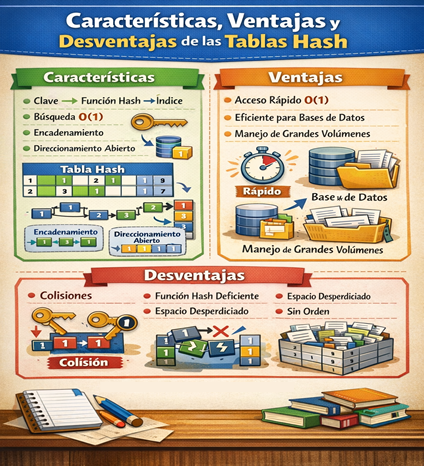
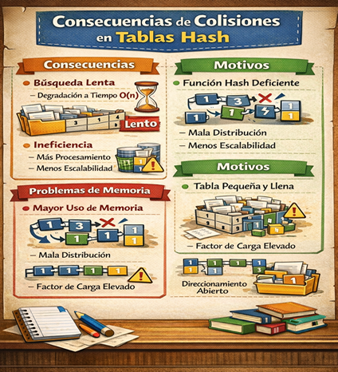
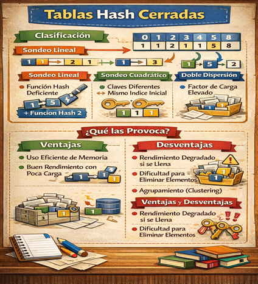

Las tablas hash se basan en aplicar una función hash a una clave, como un número, una palabra o un identificador, para transformarla en una posición dentro de un arreglo. Gracias a ello, en muchos casos las operaciones de búsqueda, inserción y eliminación pueden realizarse en tiempo casi constante, lo que las vuelve muy útiles en sistemas que manejan grandes volúmenes de datos.
Su idea principal consiste en asociar cada dato con una clave única. Por ejemplo, si se desea guardar el nombre de un estudiante a partir de su matrícula, la función hash toma esa matrícula y calcula en qué posición debe guardarse el dato. Así, cuando se requiere consultarlo después, no es necesario recorrer toda la estructura, sino acudir directamente a la posición generada. Esto hace que las tablas hash sean muy eficientes en aplicaciones como diccionarios, bases de datos, compiladores y sistemas de caché.
La especificación genérica en tablas hash se refiere a la forma abstracta en que se define esta estructura de datos sin depender de un lenguaje de programación específico. En este nivel, se establecen los tipos de datos, las operaciones básicas y las reglas de comportamiento que debe cumplir una tabla hash, permitiendo su implementación en distintos contextos manteniendo su funcionalidad esencial. En otras palabras, describe qué hace la estructura y no cómo se implementa (Goodrich et al., 2014).
Desde esta perspectiva, una tabla hash se define como un tipo de dato abstracto (TDA) que almacena pares (clave, valor). La especificación incluye operaciones fundamentales como: insertar (put), buscar (get), eliminar (remove) y, en algunos casos, verificar si una clave existe. Estas operaciones deben comportarse de manera eficiente, idealmente en tiempo constante, lo que implica que la estructura debe estar diseñada para acceder directamente a los datos a partir de una clave (Weiss, 2014).
Además, la especificación genérica contempla el uso de una función hash, la cual es responsable de transformar una clave en una posición dentro de la tabla. Aunque no se define una función específica, sí se establecen sus propiedades deseables, como distribuir uniformemente las claves para evitar concentraciones que generen colisiones. También se consideran mecanismos generales para el manejo de colisiones, como el encadenamiento o el direccionamiento abierto, sin entrar en detalles de implementación (Cormen et al., 2009).
Son una estructura de datos que permite almacenar información en pares clave–valor, donde cada clave es transformada mediante una función hash en una posición específica dentro de un arreglo. Este mecanismo facilita un acceso directo a los datos, evitando recorrer toda la estructura como sucede en listas o arreglos tradicionales. Gracias a esta característica, las tablas hash se consideran una de las estructuras más eficientes para la gestión de grandes volúmenes de información (Cormen, Leiserson, Rivest & Stein, 2009).
El funcionamiento de una tabla hash se basa en tres componentes principales: la clave, la función hash y el arreglo donde se almacenan los datos. Cuando se inserta un elemento, la clave se procesa mediante la función hash, generando un índice que indica la posición exacta donde se guardará el valor. Este proceso también se utiliza para la búsqueda y eliminación, lo que permite realizar estas operaciones de manera rápida y eficiente sin necesidad de recorrer toda la estructura.
Una de las principales ventajas de las tablas hash es su eficiencia en términos de tiempo, ya que en condiciones ideales las operaciones de inserción, búsqueda y eliminación se realizan en tiempo constante O(1). Esta eficiencia las convierte en una herramienta fundamental en aplicaciones como bases de datos, compiladores, sistemas de caché y estructuras como diccionarios o mapas en distintos lenguajes de programación.
Las tablas hash presentan un problema conocido como colisiones, el cual ocurre cuando dos claves diferentes generan el mismo índice dentro de la tabla. Para resolver este inconveniente, existen técnicas como el encadenamiento, que utiliza listas enlazadas en cada posición, y el direccionamiento abierto, que busca espacios alternativos dentro del arreglo. Estas estrategias permiten mantener la eficiencia del sistema incluso cuando ocurren conflictos en la asignación de posiciones (Knuth, 2011).
Es por ello que las tablas hash son una herramienta esencial en la algoritmia y las estructuras de datos debido a su capacidad para optimizar el almacenamiento y la recuperación de información. Su implementación adecuada permite mejorar significativamente el rendimiento de los sistemas informáticos, especialmente en aplicaciones donde la rapidez y la eficiencia son factores críticos. Por ello, su estudio resulta fundamental en la formación de estudiantes y profesionales en el área de la computación.
Acceso rápido y directo a los datos sin recorrer toda la estructura.
Alta eficiencia en aplicaciones que requieren búsquedas frecuentes.
Ideales para estructuras como diccionarios, mapas y bases de datos.
Permiten manejar grandes volúmenes de información de manera eficiente.
Simplifican la organización de datos mediante el uso de claves únicas.
Pueden presentarse colisiones, afectando el rendimiento.
Dependen de una función hash adecuada para evitar problemas de distribución.
Requieren definir un tamaño adecuado de la tabla (puede haber desperdicio de memoria).
No mantienen un orden, lo que dificulta recorridos ordenados.
En el peor caso, el rendimiento puede degradarse a O(n).

Tiene un proceso fundamental en las tablas hash que se utiliza cuando dos o más claves diferentes generan el mismo índice dentro de la estructura. Este fenómeno, conocido como colisión, es inevitable debido a que el número de posibles claves suele ser mayor que el tamaño de la tabla. Por ello, se han desarrollado distintas estrategias que permiten almacenar y recuperar los datos sin perder eficiencia, garantizando así el correcto funcionamiento de la estructura.
Una de las técnicas más comunes es el encadenamiento, en la cual cada posición de la tabla hash contiene una lista (generalmente enlazada) donde se almacenan todos los elementos que comparten el mismo índice. De esta forma, cuando ocurre una colisión, el nuevo elemento no reemplaza al anterior, sino que se agrega a la lista correspondiente. Esta estrategia es sencilla de implementar y permite manejar múltiples colisiones, aunque puede afectar el rendimiento si las listas crecen demasiado (Goodrich, Tamassia & Goldwasser, 2013).
Otra técnica ampliamente utilizada es el direccionamiento abierto, donde, en lugar de usar estructuras adicionales, se buscan posiciones alternativas dentro de la misma tabla cuando ocurre una colisión. Métodos como el sondeo lineal, cuadrático o la doble dispersión permiten encontrar espacios disponibles para almacenar los datos. Aunque esta técnica optimiza el uso de memoria, puede generar agrupamientos que disminuyen la eficiencia en las búsquedas, especialmente cuando la tabla se encuentra muy llena (Knuth, 2011).

Es importante considerar que genera la resolución de colisiones tinene diversas consecuencias que afectan directamente el rendimiento de los algoritmos. Una de las principales es la degradación en el tiempo de acceso, ya que las operaciones que normalmente se realizan en tiempo constante O(1) pueden llegar a comportarse como O(n) en el peor de los casos. Esto ocurre porque se requiere recorrer estructuras adicionales o buscar espacios alternativos, lo que incrementa el tiempo de procesamiento y reduce la eficiencia del sistema.
Estas colisiones son provocadas principalmente por una mala función hash o una distribución inadecuada de los datos dentro de la tabla. Si la función hash no dispersa uniformemente las claves, es más probable que múltiples elementos se asignen al mismo índice. Asimismo, un tamaño de tabla insuficiente o una alta carga de elementos (factor de carga elevado) incrementa la probabilidad de colisiones, ya que hay menos espacios disponibles para almacenar nuevos datos.
Se debe de considerar que el incremento en el uso de memoria o complejidad del sistema, dependiendo de la técnica de resolución empleada. Por ejemplo, el encadenamiento requiere estructuras adicionales como listas enlazadas, mientras que el direccionamiento abierto puede provocar agrupamientos que dificultan las búsquedas. Estas situaciones no solo afectan el rendimiento, sino también la escalabilidad de la aplicación, especialmente en sistemas que manejan grandes volúmenes de información (Knuth, 2011).
Estas tablas que son también conocidas como tablas con direccionamiento abierto, son una variante de las tablas hash en la que todos los elementos se almacenan directamente dentro del arreglo principal, sin utilizar estructuras auxiliares como listas enlazadas. En este enfoque, cuando ocurre una colisión, el sistema busca otra posición disponible dentro de la misma tabla siguiendo una secuencia de exploración determinada. Este tipo de implementación optimiza el uso del espacio al concentrar todos los datos en un solo arreglo.
El funcionamiento de las tablas hash cerradas se basa en aplicar una función hash para obtener un índice inicial y, en caso de colisión, emplear técnicas como el sondeo lineal, sondeo cuadrático o la doble dispersión para encontrar una nueva posición libre. Estas estrategias permiten recorrer la tabla de manera sistemática hasta ubicar un espacio disponible, garantizando así que cada elemento sea almacenado sin necesidad de estructuras externas (Weiss, 2014).
Las tablas hash cerradas sirven principalmente para optimizar el almacenamiento y la recuperación de datos cuando se busca eficiencia en el uso de memoria. Son ampliamente utilizadas en aplicaciones donde el espacio es limitado y se requiere rapidez en las operaciones de búsqueda, inserción y eliminación. Además, su estructura compacta favorece el aprovechamiento de la memoria caché, lo que puede mejorar el rendimiento en sistemas computacionales modernos.
En cuanto a su función dentro de la algoritmia, las tablas hash cerradas permiten gestionar grandes volúmenes de información de manera eficiente, siempre que se controle adecuadamente el factor de carga para evitar saturación. No obstante, si la tabla se llena demasiado, el rendimiento puede degradarse debido al aumento en el número de intentos para encontrar posiciones libres. Por ello, su correcta implementación y dimensionamiento son fundamentales para mantener un equilibrio entre eficiencia y rendimiento (Knuth, 2011).

Se clasifican principalmente según el método de exploración utilizado para resolver colisiones dentro del mismo arreglo. Entre las más comunes se encuentran el sondeo lineal, que busca la siguiente posición disponible de manera secuencial; el sondeo cuadrático, que utiliza incrementos no lineales para evitar agrupamientos; y la doble dispersión (double hashing), que aplica una segunda función hash para determinar el salto entre posiciones. Estas clasificaciones surgen debido a la necesidad de encontrar ubicaciones alternativas eficientes cuando múltiples claves generan el mismo índice inicial.
El uso de estas técnicas es provocado principalmente por la presencia de colisiones, las cuales ocurren cuando diferentes claves se asignan al mismo índice en la tabla. Factores como una función hash deficiente, una mala distribución de datos o un factor de carga elevado incrementan la frecuencia de estas colisiones, obligando al sistema a aplicar métodos de exploración para ubicar espacios disponibles. Además, el crecimiento del volumen de datos dentro de la tabla puede generar fenómenos como el agrupamiento (clustering), que afecta negativamente el rendimiento.
Entre las ventajas de las tablas hash cerradas se destaca su eficiente uso de memoria, ya que no requieren estructuras adicionales como listas enlazadas, y su buen rendimiento cuando el factor de carga es bajo. Sin embargo, presentan desventajas importantes, como la degradación del rendimiento cuando la tabla se llena, la dificultad para eliminar elementos sin afectar la estructura, y la posibilidad de clustering que incrementa el tiempo de búsqueda. Por ello, su implementación requiere un balance adecuado entre tamaño de la tabla y cantidad de elementos para mantener su eficiencia (Knuth, 2011).
Los arreglos (arrays) y vectores son estructuras de datos lineales que almacenan elementos del mismo tipo en posiciones contiguas de memoria. Su principal característica es que permiten acceder a cualquier elemento de forma directa mediante un índice, lo que los hace muy eficientes en operaciones de lectura. Los vectores, en muchos lenguajes, representan una versión dinámica de los arreglos, ya que pueden cambiar su tamaño durante la ejecución.
Por otro lado, las listas enlazadas almacenan los elementos de forma no contigua en memoria y los conectan mediante punteros. Esto permite insertar o eliminar elementos sin necesidad de mover los demás, lo que resulta más eficiente en operaciones dinámicas. Sin embargo, su acceso es secuencial, por lo que encontrar un elemento específico puede requerir recorrer toda la lista.
En comparación, los arreglos y vectores destacan por su rapidez en el acceso directo y simplicidad de implementación, mientras que las listas enlazadas ofrecen mayor flexibilidad en la gestión de datos. La elección entre estas estructuras depende del tipo de problema: si se requiere acceso rápido, se prefieren arreglos o vectores; si se necesita modificar constantemente la estructura, las listas enlazadas son más adecuadas (Sedgewick & Wayne, 2011).
Las nociones de complejidad de las operaciones permiten analizar el rendimiento de un algoritmo o estructura de datos en función del tiempo y los recursos que utiliza para ejecutarse. Su función principal es medir cuántas operaciones se requieren conforme aumenta el tamaño de los datos, lo cual se expresa comúnmente mediante la notación Big-O (O). Esta herramienta es fundamental para comparar algoritmos y elegir el más eficiente según el problema a resolver.
En cuanto a su funcionamiento, la complejidad se centra en evaluar operaciones básicas como inserción, eliminación, búsqueda y acceso. Por ejemplo, en un arreglo el acceso a un elemento es O(1), mientras que en una lista enlazada es O(n), ya que se debe recorrer la estructura. Estas diferencias permiten identificar qué estructura es más adecuada dependiendo del tipo de operación que se realizará con mayor frecuencia.
Entre sus características principales, la complejidad se clasifica en distintos tipos como tiempo y espacio, además de analizarse en casos mejor, promedio y peor. También se representa mediante funciones matemáticas como O(1), O(n), O(log n) y O(n²), las cuales describen el crecimiento del costo computacional. Estas representaciones ayudan a comprender el comportamiento de los algoritmos sin depender del hardware o lenguaje de programación utilizado.
Por lo que la importancia de estas nociones radica en que permiten desarrollar algoritmos más eficientes y optimizados, reduciendo tiempos de ejecución y consumo de memoria. Su aplicación es clave en el diseño de software, ya que facilita la toma de decisiones informadas sobre qué estructuras y métodos utilizar en función de la escala del problema, garantizando un mejor desempeño en sistemas reales (Weiss, 2014).
Las implementaciones y aplicaciones en estructuras de datos y algoritmos cumplen la función de llevar los conceptos teóricos a soluciones prácticas dentro de los sistemas informáticos. Su propósito principal es definir cómo se organizan los datos en memoria y cómo se ejecutan las operaciones sobre ellos, permitiendo resolver problemas de manera eficiente. A través de la implementación, se selecciona la estructura más adecuada según las necesidades del sistema, optimizando el uso de recursos.
En cuanto a su funcionamiento, una implementación implica traducir una estructura abstracta, como listas, pilas o colas, en código que pueda ejecutarse en un lenguaje de programación. Esto puede realizarse mediante enfoques estáticos (como arreglos) o dinámicos (como listas enlazadas), dependiendo de si se requiere flexibilidad o rapidez en el acceso. Cada tipo de implementación influye directamente en el rendimiento de las operaciones (Weiss, 2014).
Entre sus características principales se encuentra la capacidad de adaptarse a distintos contextos, la eficiencia en el manejo de datos y la relación directa con la complejidad de las operaciones. Además, permiten evaluar aspectos como el tiempo de ejecución y el consumo de memoria, lo cual es esencial para diseñar algoritmos óptimos. También destacan por su modularidad, ya que pueden reutilizarse en diferentes aplicaciones.
Por otro lado, las aplicaciones de estas implementaciones se observan en múltiples áreas de la informática, como la gestión de bases de datos, sistemas operativos, inteligencia artificial y desarrollo de software. Por ejemplo, las listas enlazadas se utilizan en la gestión dinámica de memoria, las colas en la planificación de procesos y los árboles en la organización jerárquica de información.
Por lo que su importancia de comprender las implementaciones y sus aplicaciones radica en que permiten desarrollar soluciones eficientes y escalables. Elegir correctamente una estructura de datos e implementarla de forma adecuada impacta directamente en el desempeño del sistema, facilitando la resolución de problemas complejos y mejorando la calidad del software (Knuth, 2011).
A continuación, se explican la funcionalidad de las listas:
Evalúa tu comprensión sobre listas y sus características.